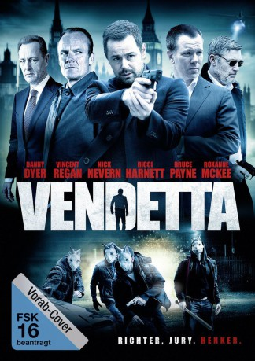

#5980 Vendetta
 
 IMDB-Wertung: 5.9 / 10
IMDB-Wertung: 5.9 / 10  Tomatometer: 17
Tomatometer: 17  Metascore: 0
Metascore: 0 
Jimmy Vickers ein Vernehmungspolizist einer Spezialeinheit, spürt die Mitglieder einer Bande auf, die für den Tot seiner Eltern verantwortlich sind. Er hat daraufhin bittere Rache geschworen und beginnt nun, die einzelnen Beteiligten einen nach dem anderen zur Strecke zu bringen. Doch sind ihm seine Kollegen von der Polizei dicht auf den Fersen und er muss sie so lange auf eine falsche Fährte schicken, bis er sein Werk vollendet hat.
Jahr: 2013
Dauer: 106 Minuten
FSK: 18
Land: England Studio: UFATonspuren: DTS - ,
Untertitel: Deutsch,
Auflösung: 1080p (1920x800) Größe: 9533 MB
Genre: Action, Thriller
Regisseur: Stephen Reynolds
Drehbuch: Sergio Citti
Soundtrack:
Darsteller:
 Danny Dyer als Jimmy Vickers
Danny Dyer als Jimmy Vickers Vincent Regan als Colonel Leach
Vincent Regan als Colonel Leach- Roxanne McKee als Morgan Vickers
 Alistair Petrie als DCI Spencer Holland
Alistair Petrie als DCI Spencer Holland- Ricci Harnett als Joe Windsor
 Nick Nevern als Ronnie
Nick Nevern als Ronnie- Bruce Payne als Rooker
- Emma Samms als Sandra Vickers
- Simona Roman als Sophia
- Joshua Osei als Warren Evans
 Ryan Oliva als Caleb
Ryan Oliva als Caleb- James Mullinger als Alex
- Jay Sutherland als Elliot Grant
- Martin Fisher als Shields
 Alexis Rodney als Leon
Alexis Rodney als Leon Josef Altin als Rob
Josef Altin als Rob- Charlie Bond als Kerry
- Ben Shockley als Terry
- Elijah Baker als Joshua Evans
- Lucy Drive als Catherine Hopkins
 Nick Thomas-Webster als Inspector Peters
Nick Thomas-Webster als Inspector Peters- James Alper als PC Taylor
- Ramin Karimloo als New York Thug
- Scott Samain als Colin
 Susan Fordham als Punter
Susan Fordham als Punter Amy Clare Beales als Forensic
Amy Clare Beales als Forensic Michael Chapman als Restaurant Customer , uncredited
Michael Chapman als Restaurant Customer , uncredited Shane Hart als News Cameraman , uncredited
Shane Hart als News Cameraman , uncredited Patrick Carney Junior als Public Servant , uncredited
Patrick Carney Junior als Public Servant , uncredited- Marcus Langford als Police Forensic Officer - SOCO , uncredited
- Nick Maison als SAS Soldier , uncredited
 Allistair McNab als SAS Soldier , uncredited
Allistair McNab als SAS Soldier , uncredited- Mark Preston als Pub Regular , uncredited
 Jason Redshaw als Strip Club Customer , uncredited
Jason Redshaw als Strip Club Customer , uncredited- Glenn Salvage als Gang Member , uncredited
- Carley Watts als Journalist , uncredited
- Tony Denham als George Vickers
- Tamaryn Payne als WPC Jenny Clarke
- Michael Ryan als Griff
- Anna Brecon als Julia
- Samuel Kane als Dennis
- Hugo Myatt als Carter
- Naomi Todd als Cassie
- Roman Kemp als Ryan
- Tiffani Thompson als Kadie
- Jean-Paul Van Cauwelaert als Trojan
- Tracy Kirby als Debs
- Dani Dyer als Nikki
- Sam Hudson als Danny
- Jessica Ann Brownlie als Waitress
Datei: X:\FSK18-2013\Vendetta (2013, FSK18, 1920x800).mkv seit 16.04.2017
Festplatte: FSK18
 Es gibt insgesamt 26 Filme in der Gruppe 'FSK18-2013'
Es gibt insgesamt 26 Filme in der Gruppe 'FSK18-2013'